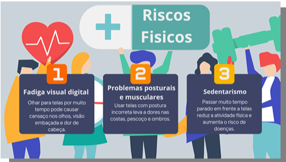

Conectados ao futuro, mas cuidando do corpo
1. Dificuldade de atenção O uso excessivo de telas pode prejudicar significativamente a capacidade de concentração, principalmente quando se trata de atividades prolongadas que exigem foco e raciocínio contínuo. A exposição constante a estímulos visuais e sonoros, como notificações, vídeos curtos e múltiplas abas abertas, contribui para a fragmentação da atenção, dificultando a realização de tarefas com qualidade e eficiência. Crianças, adolescentes e até adultos podem apresentar dificuldade em manter o foco em atividades escolares, profissionais ou cotidianas. A longo prazo, esse problema pode afetar o rendimento acadêmico, profissional e até as relações interpessoais. Estabelecer limites no uso de dispositivos, praticar o foco em uma tarefa de cada vez e fazer pausas frequentes ajudam a melhorar a atenção. 2. Dependência O uso exagerado de telas, especialmente de redes sociais, jogos e aplicativos de entretenimento, pode levar à dependência digital, um comportamento compulsivo caracterizado pela necessidade constante de estar conectado. Essa dependência afeta a saúde mental, causando ansiedade, irritabilidade e dificuldade em realizar atividades off-line. A pessoa dependente pode sentir angústia ao ficar longe do celular ou computador, o que prejudica o sono, a alimentação e o convívio social. É essencial reconhecer os sinais de vício em tecnologia, como a perda da noção do tempo online, o isolamento e a negligência com responsabilidades. A adoção de hábitos mais saudáveis e, em casos mais severos, o acompanhamento psicológico são formas importantes de lidar com esse problema. 3. Ansiedade e estresse O uso constante de telas, especialmente para consumir conteúdo em redes sociais e noticiários, pode contribuir significativamente para o aumento da ansiedade e do estresse. A sobrecarga de informações, a comparação constante com a vida de outras pessoas e a necessidade de estar sempre atualizado geram um cansaço mental intenso. Além disso, a falta de descanso e a interrupção de momentos de relaxamento para checar mensagens ou notificações fazem com que o cérebro permaneça em estado de alerta contínuo. Esse comportamento, quando repetido diariamente, pode resultar em quadros de esgotamento mental (burnout) e distúrbios do sono. Práticas como a meditação, o tempo longe das telas, o controle das notificações e a busca por equilíbrio entre vida online e off-line são medidas eficazes para reduzir esses sintomas.
